L4 Configure and Manage Virtual Networks
1、Implement and Manage Virtual Networking
1 Azure Virtual Network overview
Typical On-premise
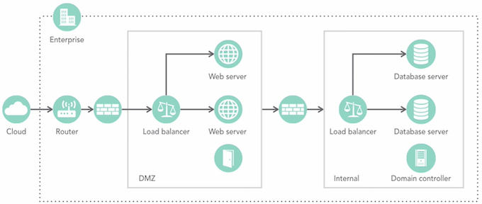
Azure
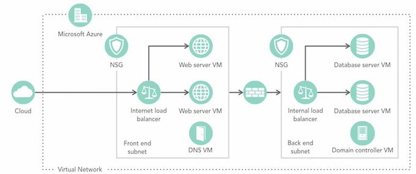
1-1 Virtual Network Overview
- Isolation and segmentation from other virtual networks
- Communication between the resources in the network
- Allows for external communication
- Filter and Route traffic
- Connect virtual networks
Isolation & Segmentation
- Multiple VNets per region and subscription
- Further isolate or segment using subnets
- By default traffic is routed between all subnets in a
- VNet Network Security Groups
- Network Virtual Appliances
1-2 Virtual Network Subnet
- Subnets must a part of the virtual network address space
- Subnets can not overlap
- Use a
service endpointto restrict access to a resource, such as Azure storage
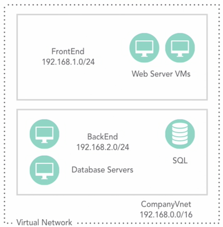
1-3 External Communication
-
Internet
- Outbound access is allowed by default
- Inbound requires public IP
-
On-premises
1-4 Filter and Route Traffic
- Network Routes
- Network Security Groups
- Network Virtual Appliances
1-5 Virutal Network Subnet
- Same or different regions
- Different subscriptions
- Seamless communications
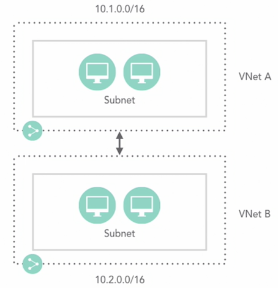
1-6 Virutal Network Subnet
- Connect VNets in different region and subscriptions
- Requires a VNet Gateway
- Provides a secure tunnel
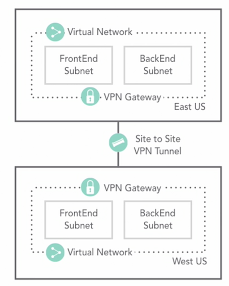
1-7 Create a virtual network using the portal
When you enable an service endpoint, the service or services to the virtual network, the service or services are secured to the VN
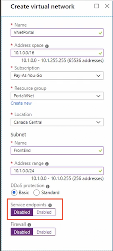
Add subnet
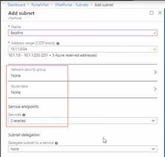
1-8 Create a virtual network using PowerShell
#Create VNet and subnets
#Parameters
$RG = 'PSVTet'
$Location = 'Canada Central'
#Create a Resource Group
New-AzResourceGroup -ResourceGroupName $RG -Location $Location
#Create a Vnet
$virtualNetwork New-AzVirtualNetwork`
-ResourceGroupName $RG
-Location $Location
-Name 'VNetPS'
-AddressPrefix 10.0.0.0/16
#Add a Subnet
$subnetconfig Add-AZVirtualNetworkSubnetConfig `
-Name FrontEnd `
-AddressPrefix 10.0.1.0/24 `
-VirtualNetwork $virtualNetwork
#Assign the subnet to the VNet
$virtualNetwork | Set-AzVirtual Network
#Add another subnet
$subnetConfig Add-AzvirtualNetworksubnetconfig `
-Name BackEnd `
-AddressPrefix 10.0.2.0/24 `
-virtualNetwork $virtualNetwork
#Assign the subnet to the VNet
$virtualNetwork |set-AzvirtualNetwork
#Review the VNet
Get-AZVirtualNetwork -ResourceGroupName $RG -Name 'VNetPS'
1-9 Create a network interface
- Create Network Interface
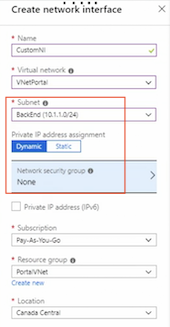
- Configure IP configuration
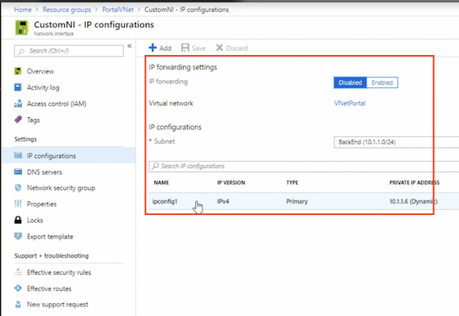
- Attach Network Interface to VM
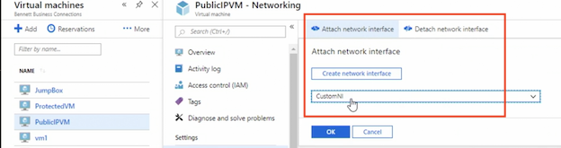
1-10 Azure IP addressing overview
1-10-1 Public IP
- Connect to the Internet
- Connect to other Azure public-facing
- Services SQL Databases
Public IP SKUs
- Basic
- Standard
Public IP Basic SKU
- Static or dynamic allocation
- Open by default
- Restrict traffic using NSGs
- Do not support Availability Zones
Public IP Standard SKU
- Static allocation
- Closed to inbound traffic
- Use NSGs to whitelist traffic
- Zone redundant by default
Public IP Assignments
- Virtual machines
- Assigned to the primary NIC
- VPN Gateways
- Dynamic IP only
- Application Gateways
- Internet-facing load balancers
Public IP - Dynamic
- Default
- Not assigned when the virtual machine is created
- Assigned during startup of the virtual machine
- Released when the virtual machine is restarted, stopped or deallocated
Public IP - Static
- The address is assigned when the virtual machine is provisioned
- Never released
- Delete the resource
- Change to dynamic
- IP is assigned from the Azure resource pool
Public Static IP Uses
- IP addresses linked to SSL certificates
- Services that require a static IP
Best Practice
- Microsoft recommends not applying the static IP to the OS of the virtual machine
- Exception
- Assigning multiple IPs to the virtual machine
- Use the same IP address that has been assigned to the network interface
1-10-2 Private IPs
- Assigned to virtual machines within the VNet
- Connect to an on-premise environment
- VPN Gateway
- ExpressRoute
- Not accessible to the Internet
Private IP - Dynamic
- Default
- Not assigned when the virtual machine is created
- Assigned during startup of the virtual machine
- Released when the virtual machine is stopped
- May change from reboot to reboot
Private IP - Static
- Assigned when the virtual machine is provisioned
- Never released
- Do not configure the private IP within the server
If you do this, this could result in failure and dropped connections
Private Static IP Uses
- Domain controllers
- DNS servers
- Other resources that need require a static IP for connectivity
1-13 DHCP
- Azure controlled
- Leases are for the lifetime of the virtual machine
But keeping in mind that we do no change the private IP address in the operating system
1-14 Configure virtual machine IP addresses using the portal
When you create VM by default, a public, dynamic IP address is assigned automatically
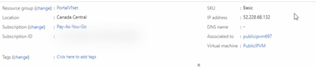
Configure IP configuration
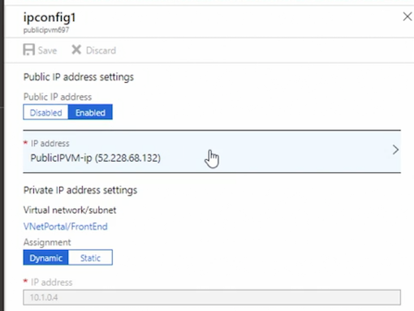
1-15 Create a private IP address using PowerShell
#Create a Private IP
#Variables
$RG= "PrivateIP"
$Location = "Canada Central"
New-AzResourceGroup -Name $RG -Location $Location
# Create a subnet configuration
$subnetconfig = New-AzvirtualNetworksubnetconfig
-Name Frontend
-AddressPrefix 10.4.0.0/24
# Create a virtual network
$VNet = New-AzVirtualNetwork `
-ResourceGroupName $RG `
-Location $Location `
-Name VNET `
-AddressPrefix 10.4.0.0/16 `
-subnet $subnetConfig
# Get the subnet object for use in a later step.
$subnet Get-AzvirtualNetworksubnetconfig -Name $SubnetConfig Name -VirtualNetwork $VNet
$ipconfigName1 = "IPConfig1"
$ipconfig1 = New-AzNetworkinterfaceipconfig `
-Name $IpconfigName1 `
-Subnet $subnet `
-PrivatelpAddress 10.4.0.4 `
-Primary
$NIC = New-AzNetworkInterface `
-Name NIC `
-ResourceGroupName $RG `
-Location $Location `
-Ipconfiguration $Ipconfig1
#view Network Interface
Get-AZNetworkinterface -ResourceGroupName $RG
#You would then assign this NIC to the vm
1-16 Create a public IP address
Standrad Public IP
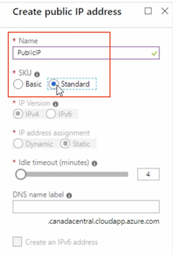
A standard can only be assoicated with virtual machine or load balancer front end, only IPv4 is available
Basic SKU Public IP
At this time, IPv6 can only be associated to internet-facing load balancer, a dynamic address is assigned after the resource has been started.
A reboot or stopped, but not deallocated, virtual machine will retain the dynamic IP, wherear a static IP is assigned when the public IP is created and does not changed.
A static IP will not be released until the public IP address is deleted
Associate public IP address to load balancer and Network interface
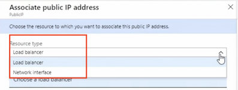
1-17 Azure route table overview
Workflow
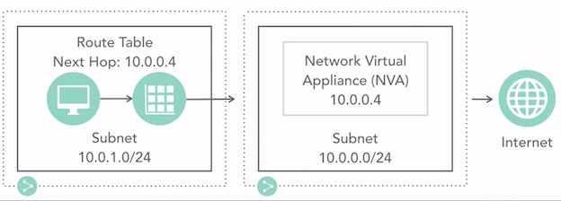
Next Hop Options
- Virtual appliance
- Virtual Network Gateway
- Virtual Network
- Internet
- None (traffic is dropped)
Network Security Groups & Route Tables
- Separate entities
- Both are applied to a Subnet
- NSG
- Security rules to allow or deny traffic
- Route Table
- Direct traffic
Considerations
- Routes can be overridden or
- Routes can be combined with the default Azure routes
- Routes with the longest prefix are used first
10.0.0.0/24will be used over10.0.0.0/16if the next hop address is in n both prefixes
Sequence for Routing
- User-defined route
- BGP route
- System route
1-10 Create and configure a network route using the portal
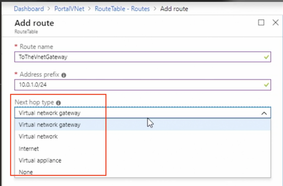
Associate route table to subnet
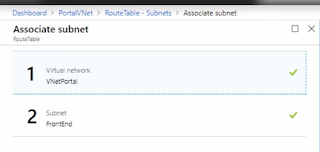
You can associate route to more than on subnet
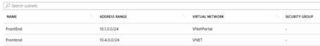
1-11 Create and configure a network route using PowerShell
#Create a VNet and routes
# Avariables
$RG = "RoutesRG"
$Location = "Canada East"
# Create the Resource Group
New-AzResourceGroup -ResourceGroupName $RG -Location
#Create the Route Table
$routeTablePublic = New-AzRouteTable
-Name 'AZRouteTable' `
-ResourceGroupName $RG `
-location $Location `
# Create the Route
Get-AzRouteTable `
-ResourceGroupName $RG`
-Name "AZRouteTable" `
| Add-AzRouteConfig
-Name "ToPrivateSubnet" `
-AddressPrefix 10.0.10.0/24 `
-NextHopType "VirtualAppliance" `
-NextHoplpAddress 10.0.20.4 `
| Set-AzRouteTable
# Create the VNet
$virtualNetwork = New-AzVirtual Network`
-ResourceGroupName $RG
-Location $Location `
-Name AZVirtualNetwork `
-AddressPrefix 10.0.0.0/16
# Create subnets
$subnetConfigPublic = Add-AzVirtualNetworkSubnetConfig
-Name Public `
-AddressPrefix 10.0.0.0/24 `
-Virtua1Network $virtualNetwork `
$subnetConfigPrivate = Add-AzVirtualNetworkSubnetConfig
-Name PrivateSubnet
-AddressPrefix 10.0.10.0/24 `
-VirtualNetwork $virtualNetwork
$subnetConfigDmz = Add-AzVirtualNetworkSubnetConfig
-Name DMZSubnet `
-AddressPrefix 10.0.20.0/24`
-VirtualNetwork $virtualNetwork
#Sets the subnet
$virtualNetwork | Set-AzvirtualNetwork
# Associates with the subnet
Set-AzVirtualNetworkSubnetConfig `
-VirtualNetwork $virtualNetwork `
-Name 'Public' `
-AddressPrefix 10.0.0 0/24 `
-RouteTable SrouteTablePublic | `
Set-AzVirtual Network
Get-AZRouteTable -ResourceGroupName $RG -Name AZRouteTable
1-12 Quiz
- By default, where is all traffic within a VNet routed?
- between all the subnets
- What does standard DDoS protection include?
- adaptive tuning
- telemetry
- notifications
- What is the cmdlet to create a subnet?
Add-AZVirtualnetworkSubnetConfig
- When must you add public IP addresses to a network interface?
- after the network interface has been provisioned
- A dynamic public IP is assigned at what point during the provisioning of a virtual machine?
- during the start up of a virtual machine
- When creating a new virtual machine, what type is the default sku for a public IP?
- basic
- What is the cmdlet to create a network interface?
New-AZNetworkInterface- You are creating an Azure public IP address that will require an IPv6 address. What sku type must you select?
- basic
- What happens to traffic if the next hop is set to none?
- All traffic is dropped.
- When setting up a route table, what type of virtual resource can the next hop be?
- Virtual Network
- Virtual Appliance
- Virtual Network Gateway
- What cmdlet would you use to create a route?
Add-AZRouteConfig
2. Create Connectivity between Virtual Networks
2-1 Azure virtual network connectivity
Options
- VNet Peering
- Global VNet Peering spans regions
- VNet to VNet
Vnet peering
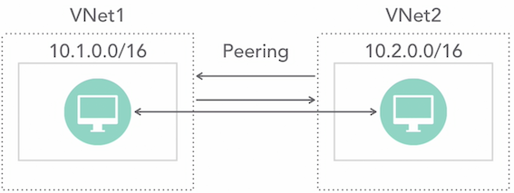
2-2 VNet Peering Overview
- Peered networks appear as one network
- Resources can communicate between the peered networks
- Traffic between the networks is private, never exposed to the Internet
- Provides low-latency and high-bandwidth between all the resources
VNet Peering Overview
- Peer across Azure regions or subscriptions as long as the subscriptions are associated to the same Azure AD tenant
- Traffic between peered networks is not encrypted
Vnet to vnet
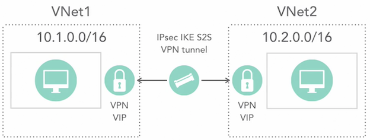
2-3 VNet to VNet Overview
- Secured tunnel using IPsec/IKE
- Resources can communicate between the networks
- Cross region geo-redundancy and geo-presence
- Regional multi-tier applications with isolation or administrative boundaries
- Can be combined with multi-site configurations
VNet to VNet Overview
- VPN Gateway is required
- Traffic between the networks is private, never exposed to the Internet
- VNets in different subscriptions must be configured using PowerShell
2-3 Create and configure VNet peering in the portal
Add peering(A->B)
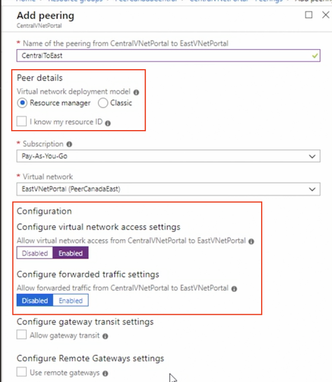
- You can across subscriptions
- You can enable or disable forwarding traffic, if you enable forwarding traffic, traffic has come through this virtual network but not generated here would be forewarded to a peered network
Add peering(B->A)
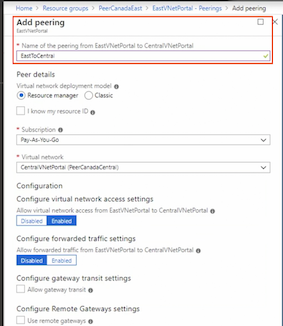
Connected peering
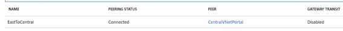
Check： Effective routes => VNetGloablpeering
2-4 Create and configure VNet peering using PowerShell
# variables
$RGName = 'PeeringPS'
$Location ='CanadaCentrall
#Create Resource Group
New-AzResourceGroup -Name $RGName -Location $Location -Tag @{Peering "Portal"}
# Create
$vnet1 = New-AZVirtualNetwork -ResourceGroupName $rgName -Name 'VNet1' -AddressPrefix '10.7.0.0/16' -Location $location
$vnet2 = New-AZVirtualNetwork -ResourceGroupName $rgName -Name 'VNet2' -AddressPrefix '10.5.0.0/16' -Location location
# Peer VNet1 to VNet2
Add-AZVirtualNetworkPeering -Name 'VNet1ToVNet2' -VirtualNetwork $vnet1 -RemoteVirtualNetworkId $vnet2.Id
# Peer VNet2 to VNet1
Add-AZVirtualNetworkPeering -Name 'VNet2ToVNet1' -VirtualNetwork $vnet2 -RemoteVirtualNetworkId $vnet1.Id
#Verify
Get-AZVirtualNetworkPeering -Name 'VNet1ToVNet2' -VirtualNetwork 'Vnetl' -ResourceGroupName $rgName | Select PeeringState
2-5 Create a VNet gateway
1. Add gateway subnet
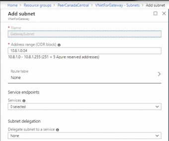
2. Create virtual network gateway
- A good rule, for the most part, is choosing a route based VPN.
- Note: A policy based VPN will only allow for one to site connection The difference in the SKUs is the throughput
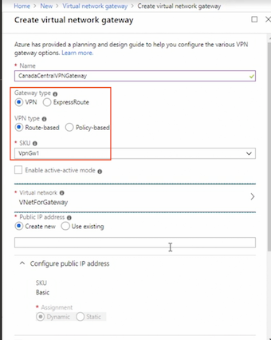
2-5 Configure VNet-to-VNet connection
1. Add connection(VNet to VNet A->B)
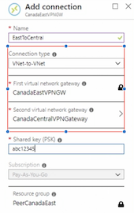
2. Add connection(VNet to VNet B->A)
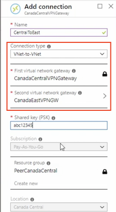
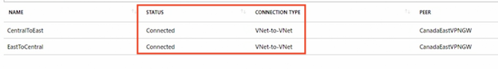
In order to use the portal, the network must be in the same subscriptions, If the networks are in different subscriptions, you will using Powershell
2-6 Quiz
-
You are connecting two virtual networks in Azure. The traffic must be encrypted during transit. What type of connection should you use?
- VNet to VNet
-
To verify two networks have been peered in effective routes, what is the next hop type?
- peered
-
What cmdlet would you use to peer to another network?
Add-AZVirtualNetworkPeering
-
You are setting up a VNet connection and require multiple vnet gateways from a single on-premises connection. What do you need to enable for this functionality?
Active-active mode
-
You need to connect two networks in different subscriptions using a VNet to VNet connection. How would you accomplish this?
- Create a VNet to VNet connection using PowerShell.
3. Configure Name Resolution
3-1 Azure DNS overview
Options
- Azure provided name resolution
- Bring your own DNS
- Azure DNS Azure DNS Private Zones (Preview)
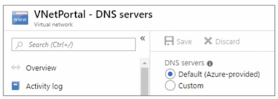
Azure Provided DNS Pros
- No configuration required
- FQDN is not needed
- Unless connecting to networks in the Classic model
- Highly available
Azure Provided DNS Cons
- DNS suffix can not be modified
- WINS and NetBIOS are not supported
- Cannot manually register records
Bring Your Own DNS
- Hybrid connectivity
- Azure virtual machines and on-premises
- Azure virtual machines in different networks
- Reverse lookup of Internal IPs
- Authenticate to a DC
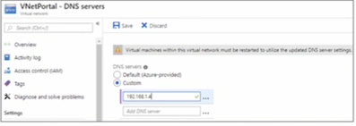
Bring Your Own DNS Considerations
- Turn off scavenging
- To avoid accidental removal of a DNS record
- Enable DNS recursion
- Accessible on TCP/UDP port 53 from clients
- Provide hostname resolution
- Secure it
3-3 Azure DNS
- Hosts DNS domains
- Provides name resolution using the Microsoft global servers
- Highly available
- Can be secured using RBAC and Resource Locking
- You must already own the domain
- Does not support DNSSEC
- Supports private DNS domains (preview)
Azure DNS Private Domains (preview)
- Provides name resolution within a Azure network
- Replaces managing a DNS server
- Span virtual networks, regions and subscriptions
- Support split-horizon
- Private and public DNS zone to share a name
Keep in mind you can't purchase domain name through Azure, you still have to do via your favorite register
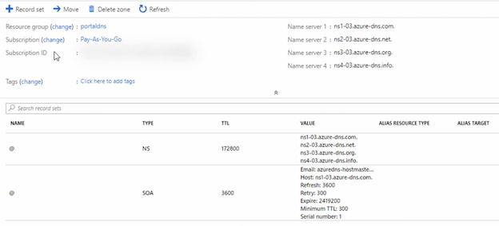
Add A record set
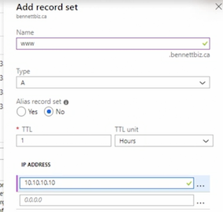
3-3 Create and configure Azure DNS using PowerShell
# variables
$RG = 'PSDNS'
$Location = 'Canada Central'
# Create DNS Zone
New-AZDnsZone -Name "bennettbiz.ca" -ResourceGroupName $RG
# Create an A Record
New-AZDNSRecordSet -Name www `
-RecordType A
-ZoneName "bennettbiz.ca" `
-ResourceGroupName $RG `
-Ttl 3600 -DnsRecords (New-AZDnsRecordconfig -IPv4Adress "10.10.10.12")
# View Record
Get-AZDnsRecordSet -ZoneName "bennettbiz.ca" `
-ResourceGroupName $RG
# Create a Private DNS Zone
New-AzDnsZone -Name private.bennettbiz.ca `
-ResourceGroupName $RG `
-ZoneType Private `
#To specify the network that the DNS will manage the hostname records
-RegistrationvirtualNetworkId @($vnet.Id)
# View Private DNS Record
Get-AZDnsRecordSet -ZoneName "private.bennettbiz.ca"
-ResourceGroupName $RG
3-4 Quiz
-
To avoid accidental removal of DNS records, what must you do if you "bring your own DNS" to Azure?
- Turn off scavenging.
-
Microsoft provides domain names for Azure DNS.
- FALSE
-
To create a Private DNS, what cmdlet do you need to include when creating a zone using PowerShell?
-ZoneType Private
4. Create and Configure a Network Security Group
4-1 Network Security Group (NSG) overview
What is a Network Security Group
- List of Rules
- Allow or Deny Traffic
- Applied to
- Subnet — affects all the virtual machines in the subnet
- Network Interface — affects the virtual machine
- Inbound or Outbound
Nsg Workflow
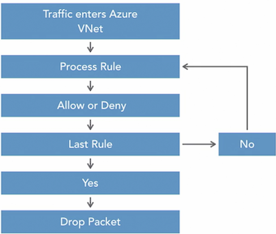
Default Inbound Security Rules
- AllowVNetInBound
- AllowAzureLoadBalancerInBound
- DenyAllInBound
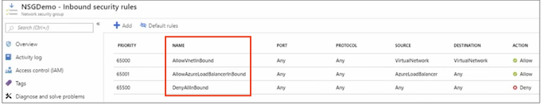
The last rule in the inbound security rules is DenyAllInBound
Default Outbound Security Rules
- AllowVnetOutbound
- AllowInternetOutBound
- DenyAllOutBound
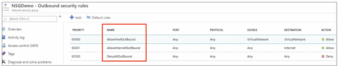
Rules
- Source, Source Port Range
- Destination, Destination Port Range
- Protocol
- Any, tcp, udp
- Action
- Allow, Deny
- Priority - Microsoft recommends increments of a 100
- Name
And Microsoft does recommend that your port range here be any or an asterisk
4-2 Create an NSG rule
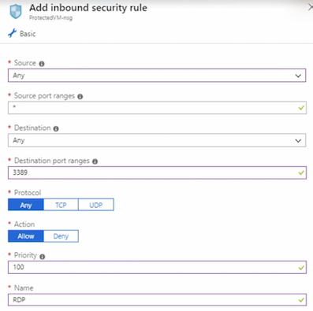
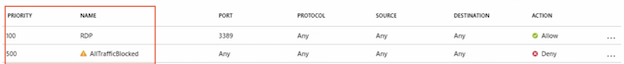
4-3 Create and associate an NSG
Associcate NSG to subnet
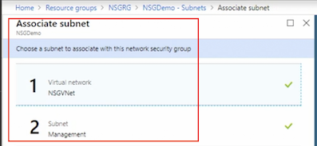
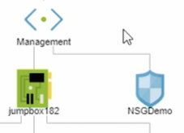
This means that any traffic coming into that subnet is subject to the rules in that network security group
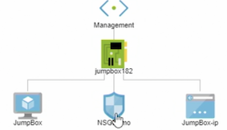
4-4 Create and configure an NSG using PowerShell
#create NSG
#Variables
$RG = 'NSGRG'
$Location = 'Canada central'
$vnet = 'NSGVNET'
$Mgmtsubnet = 'Management'
$Protectedsubnet = 'ProtectedvMs'
#create the Rule
$httprule New-AzNetworksecurityRuleconfig `
-Name "Allowinternet" `
-Description "Allow HTTP" `
-Access "Allow" `
-Protocol "Tcp" `
-Direction "Inbound" `
-Priority "200" `
-sourceAddressPrefix "Internet" `
-SourcePortRange * `
-DestinationAddressPrefix * `
-DestinationPortRange 8O
#Create the NSG
$nsg New-AzNetworkSecurityGroup `
-ResourceGroupName $RG `
-Location $Location `
-Name 'InternetNSGI' `
-SecurityRules $httprule `
#Assign to a subnet
$vnet = Get-AzvirtualNetwork `
-ResourceGroupName $RG `
-Name $vnet
#Assocaite with the subnet
$subnetPrefix = $vnet.Subnets | ?{$_.Name -eq 'ProtectedVMs'}
#set the subnet and NSG
set-AzvirtualNetworksubnetconfig `
-virtualNetwork $vnet `
-Name $Protectedsubnet `
-AddressPrefix $subnetPrefix.AddressPrefix `
-NetworkSecurityGroup $nsg
#update the VNet
set-Azvirtual Network -virtualNetwork
#View NSG
Get-AzNetworkSecurityGroup -ResourceGroupName $RG -Name InternetNSG
In oder to delete this network secruity group, you first disassociate it with the subnet, then go ahead to delete the network secruity group,
4-5 Evaluate effective security rules
- First section: attach to subnet
- Second Section: attach to network interface
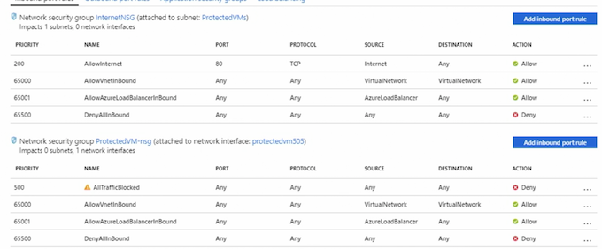
4-6 Quiz
-
What are the default NSG rule(s)?
- DenyAllInBound
- AllowAzureLoadBalancerInBound
- AllowVNetInBound
-
Security rules are processed in which order?
- lowest to highest